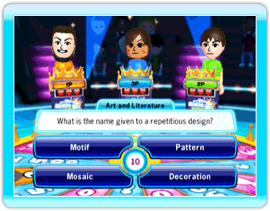

18 |
Last One Standing (Eliminatie) |
 |
‘Last One Standing’ (Eliminate) is een strategisch, zenuwslopend eliminatiespel dat je op het puntje van je stoel houdt. Speel tegen 1 tot 3 spelers en blijf als enige over op het podium!  In ‘Last One Standing’ (Eliminatie) speel je net zo lang door tot er slechts één kandidaat is overgebleven of totdat er 5 ronden zijn gespeeld. In elke ronde krijg je een vraag uit elke categorie. Elke deelnemer ontvangt drie hartjes, aan het begin van de quiz. De hartjes staan weergegeven voor je quizdesk. Als je een fout antwoord kiest en als je alle hartjes hebt verloren, dan zal een mechanische arm je uit het spel trekken. Als je het antwoord op de vraag niet weet, mag je gebruik maken van de ‘Crown’ (Kroon) op je quizdesk. Met de Kroon mag je een vraag overslaan zonder geëlimineerd te worden. Als je een vraag wilt overslaan, richt je met de Wii-afstandsbediening op de Kroon en druk je op de A-knop om te bevestigen. Je mag de Kroon slechts één keer per ronde gebruiken. |
 |
 |
 |